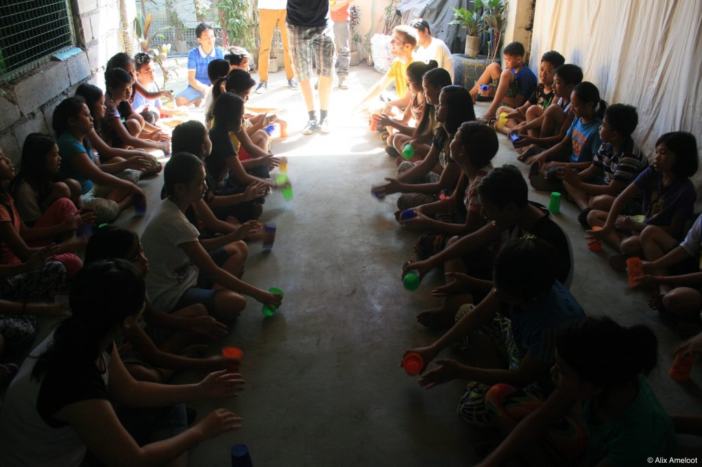
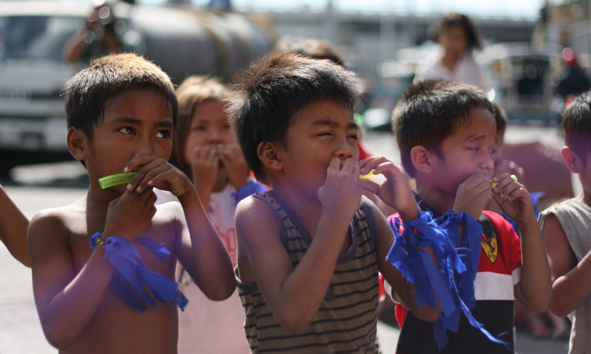
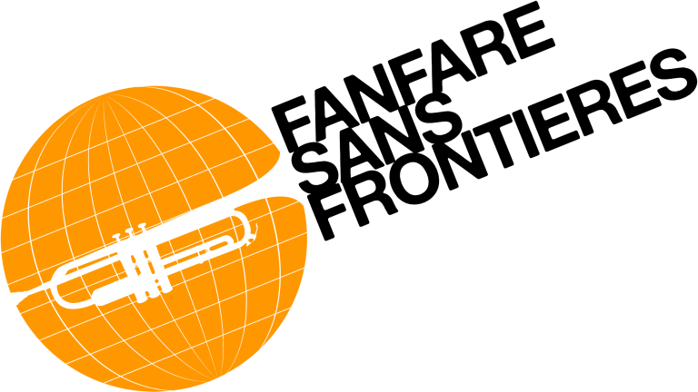

En tant que musiciens, nous savons que la musique apporte beaucoup pour le développement personnel des enfants, c’est pourquoi nous voulons leur faire découvrir et partager cette passion avec eux.
Un projet musical et solidaire
La musique, vecteur d’éducation
La musique permet de dépasser les barrières culturelles et linguistiques pour encourager le développement personnel de l’enfant.
C’est l’occasion pour l'enfant de se faire plaisir mais aussi d’apprendre à vivre en groupe ou à écouter les autres.
En bref, la musique vient compléter l’éducation de ces enfants et leur donne une nouvelle ouverture culturelle. Elle permet également aux ONG de diversifier leurs activités auprès des enfants.
Nos objectifs
A partir de Janvier 2019, nous allons organiser durant 6 mois et dans 3 pays différents des ateliers composés de chants, de jeux de rythmes, de mises en scène et d’improvisations, mais aussi de construction d’instruments à partir de matériaux recyclés
Au terme de 2 mois d’ateliers dans une ONG, avant de se rendre dans le pays suivant, nous finirons notre action auprès des enfants en les mettant sur le devant de la scène puisqu’ils auront l’occasion de mettre en pratique ce qu’ils ont appris avec nous lors d’un spectacle. Ce spectacle sera également un moment de partage entre enfants et adultes, ouvert à des artistes locaux.
En plus de donner un objectif concret aux enfants et un fil conducteur à tous nos ateliers, cela leur donnera l’occasion de prendre confiance en eux en montrant tout ce qu’ils sont capable de faire.
Notre préparation
Avant notre départ nous allons nous préparer au mieux pour cette action via la recherche documentaire et la création d’ateliers, mais aussi par la pratique : nous avons décidé de réaliser des ateliers d’éveil musical dans dans l'école primaire Henri Wallon à Palaiseau en région parisienne.
Ce sera pour nous l’occasion de gagner en expérience avec les enfants, pour l’instant sans barrière de la langue ni culturelle.
Nous allons travailler avec des ONGs locales, soigneusement selectionné pour correspondre à nos convictions et objectif pedagogiques
Le réseau Fanfare Sans Frontières
Loud’N Around n’est pas une action isolée puisque nous faisons parti du réseau Fanfare Sans Frontières créé en 2010 qui a déjà vu partir 14 projets similaires.
Ce réseau permet le partage d’expérience entre étudiants s’engageant dans un projet comme le nôtre ce qui permet à l’action de s’améliorer continuellement et d’être pérennisée au fil des projets.